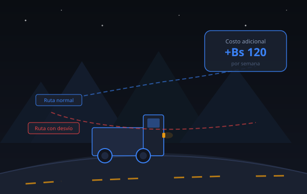
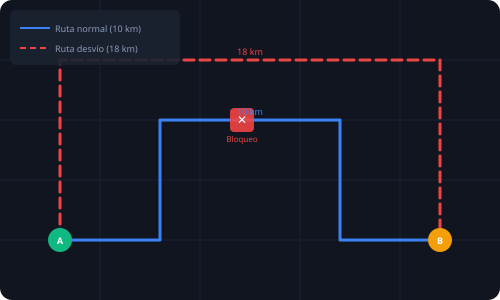
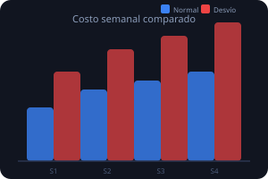

Bloqueos y desvíos
Los conflictos sociales y bloqueos de carreteras obligan a transportistas y ciudadanos a tomar rutas más largas, aumentando el tiempo y el costo del traslado de forma significativa.
Herramienta educativa para estimar cómo los bloqueos, desvíos y el alza de combustible incrementan el costo de traslado semanal y mensual de personas y transportistas.

Los conflictos sociales y bloqueos de carreteras obligan a transportistas y ciudadanos a tomar rutas más largas, aumentando el tiempo y el costo del traslado de forma significativa.
El incremento del precio del combustible eleva directamente el costo por kilómetro recorrido, afectando a conductores particulares, transportistas y empresas de logística.
Un pequeño desvío diario puede representar un gasto adicional enorme al mes. La diferencia entre la ruta normal y la ruta con desvío se acumula semana tras semana.
Costo = Distancia × Costo/km × Viajes
Esta fórmula permite comparar el costo de la ruta normal frente
a la ruta con desvío en períodos semanales y mensuales.


Ingresa los datos de tu ruta y calcula el impacto del desvío en tu gasto de transporte.
Los resultados aparecerán aquí después de calcular
Evolución del costo adicional semana a semana durante 8 semanas.
Ejecuta la simulación para ver la proyección semana a semana
Ejemplos predefinidos para verificar que el simulador funciona correctamente.
| Dato | Valor |
|---|---|
| Distancia normal | 10 km |
| Distancia con desvío | 18 km |
| Costo por km | 1.5 Bs/km |
| Viajes por semana | 10 |
| Dato | Valor |
|---|---|
| Distancia normal | 50 km |
| Distancia con desvío | 80 km |
| Costo por km | 2.5 Bs/km |
| Viajes por semana | 5 |
| Dato | Valor |
|---|---|
| Distancia normal | 5 km |
| Distancia con desvío | 12 km |
| Costo por km | 1.2 Bs/km |
| Viajes por semana | 10 |
Costo = Distancia × Costo/km × Viajes permite estimar con precisión el impacto económico real.